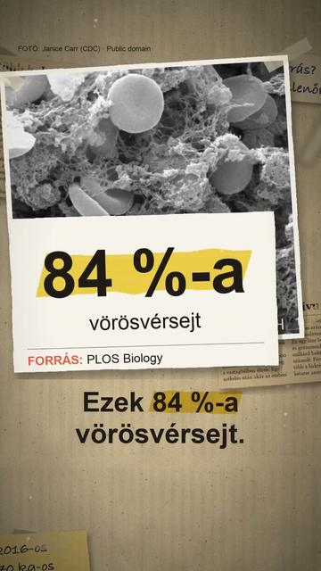

Megnézem a YouTube-onTízszer több baktérium él bennünk, mint emberi sejt?
Röviden: Nem tízszer annyi: egy 70 kg-os referencia-férfiban baktériumból nagyjából 38, emberi sejtből 30 billió van, az arány kb.
Nem tízszer annyi: egy 70 kg-os referencia-férfiban baktériumból nagyjából 38, emberi sejtből 30 billió van, az arány kb. 1,3 az 1-hez, 25 % bizonytalansággal; referencia-nőben kb. 2,2 az 1-hez (Sender, Fuchs és Milo, Weizmann Intézet, PLOS Biology, 2016, 3. táblázat). Az emberi sejtek 84 %-a vörösvérsejt; ha csak a sejtmagvas sejteket számoljuk, az arány valóban kb. 10:1. A baktériumok együtt kb. 0,2 kg-ot nyomnak, nagy részük a vastagbélben él. A 10:1 alapja, a 10¹⁴ baktérium, egy 1972-es, egymondatos becslésből ered (Luckey): 1 liter béltartalom szorozva grammonként 10¹¹ baktériummal. A két szám közel van egymáshoz, ezért egy székelés akár meg is fordíthatja az arányt (Sender, Fuchs és Milo, bioRxiv, 2016).
Az összes rész forrásokkal: https://valoban.pages.dev/
Források
- Sender, Fuchs, Milo: Revised Estimates for the Number of Human and Bacteria Cells in the Body, PLOS Biology (2016)
- Ugyanez preprintként, bioRxiv (2016)
- Nature News: Scientists bust myth that our bodies have more bacteria than human cells (2016)
3 forrás · Hogyan ellenőrzünk?
Hibát találtál? Írd meg nekünk, megnézzük.
Képek és kreditek
• E. coli baktériumok (elektronmikroszkóp) – NIAID, Public domain (https://creativecommons.org/publicdomain/mark/1.0/) https://commons.wikimedia.org/?curid=39933215
• osztódó E. coli (elektronmikroszkóp) – CDC / Evangeline Sowers, Janice Haney Carr, Public domain (https://creativecommons.org/publicdomain/mark/1.0/) https://commons.wikimedia.org/?curid=844704
• Bacteroides-baktériumok (festett kenet, fénymikroszkóp) – CDC / Dr. V. R. Dowell, Jr. (PHIL #3087), Public domain (https://creativecommons.org/publicdomain/mark/1.0/) https://commons.wikimedia.org/?curid=1860011
• vörösvérsejtek, fehérvérsejt, vérlemezkék (elektronmikroszkóp) – Bruce Wetzel, Harry Schaefer (NCI), Public domain (https://creativecommons.org/publicdomain/mark/1.0/) https://commons.wikimedia.org/?curid=1243646
• vörösvérsejtek (elektronmikroszkóp) – Janice Carr (CDC), Public domain (https://creativecommons.org/publicdomain/mark/1.0/) https://commons.wikimedia.org/?curid=40184050
• baktériumok a bélben (illusztráció) – Donny Bliss, NIH (NIH Image Gallery), CC BY 2.0 (https://creativecommons.org/licenses/by/2.0/) https://commons.wikimedia.org/?curid=180237755
• a vastagbél (ábra) – BruceBlaus (Blausen Medical), CC BY 3.0 (https://creativecommons.org/licenses/by/3.0/) https://commons.wikimedia.org/?curid=28909216
• az emberi test (Leonardo rajza) – Leonardo da Vinci (fotó: Luc Viatour), Public domain (https://creativecommons.org/publicdomain/mark/1.0/) https://commons.wikimedia.org/?curid=2738140
A képek módosítva: 9:16-ra kivágva, átméretezve, kameramozgással, ráégetett felirattal.